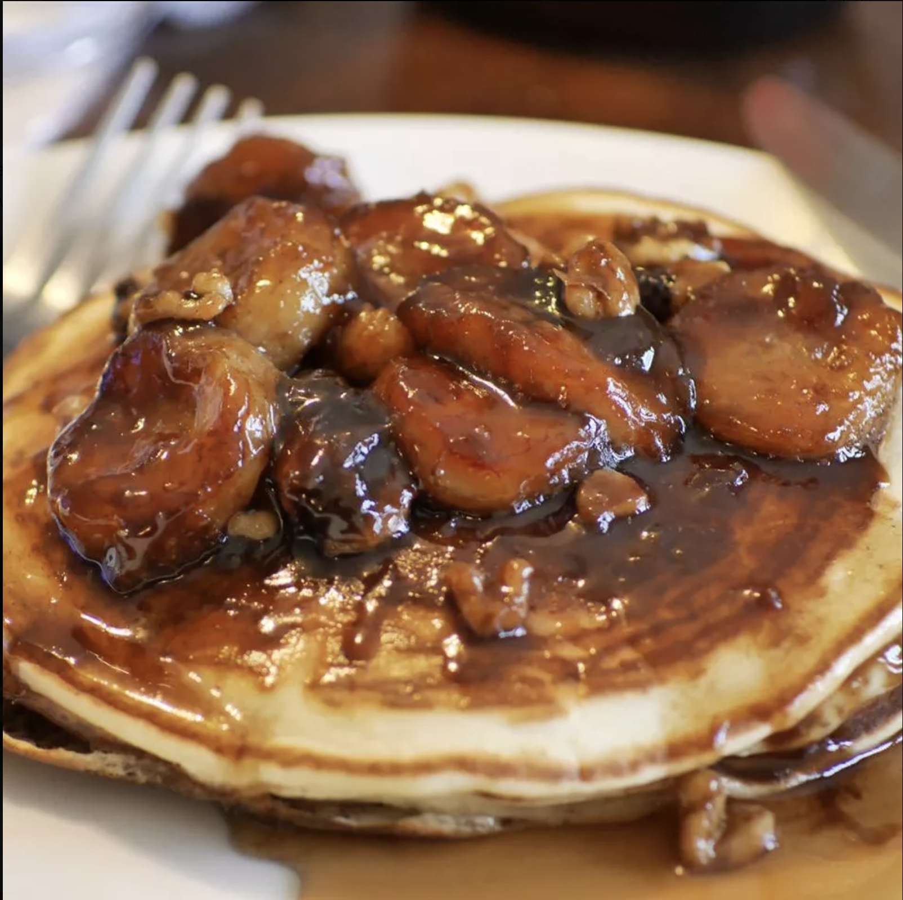

Banana Foster

Description
Bananas foster is made by cooking sliced bananas and walnuts in a buttery rum sauce and serving it over vanilla ice cream. A Father's Day favorite we all love!
Bananas foster is a dessert consisting of sliced bananas and a rum sauce served over vanilla ice cream. It originated in New Orleans and is often prepared tableside in restaurants as a flambé (a cooking technique in which alcohol
is added to a hot pan, creating flames).
Ingredients
- Butter
- Brown Sugar
- Rum
- Vanilla
- Cinnamon
- Bananas
- Walnuts
- Ice cream
Steps
- Melt the butter in a skillet. Stir in the sugar, rum, vanilla, and cinnamon.
- Add the bananas and walnuts, then cook until the bananas are soft.
- Serve over ice cream.